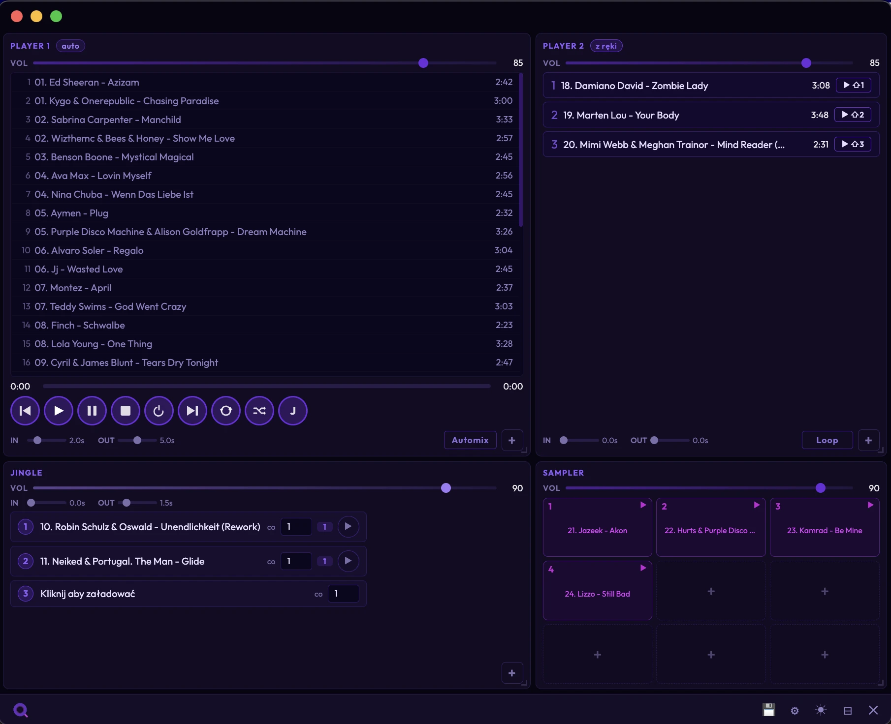

Qubatura Lab · Oprogramowanie audio
Cały event z jednego okna. Jeden operator, spokojna głowa — bez trzeciej ręki.
Kolejka gra sama, bez dziur między kawałkami.
Wchodzą co N utworów — licznik pilnuje sam.
F1–F3 pod rękę, główna sama się ścisza.
9 padów na klawiszach 1–9, gotowe zawsze.
Web Audio API · Windows / macOS · działa offline
Wersja komercyjna w drodze — po sezonie eventowym.